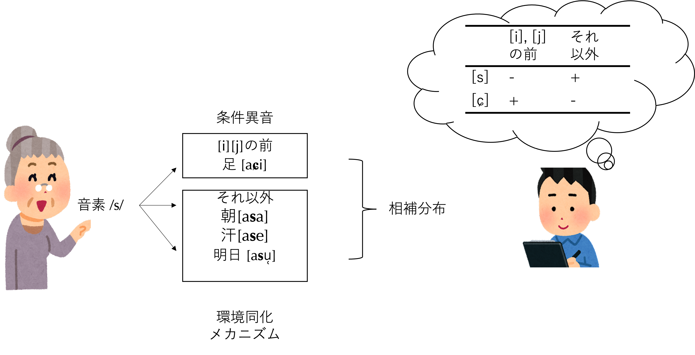
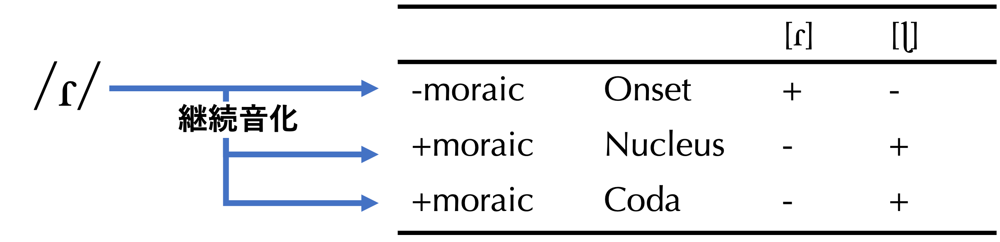
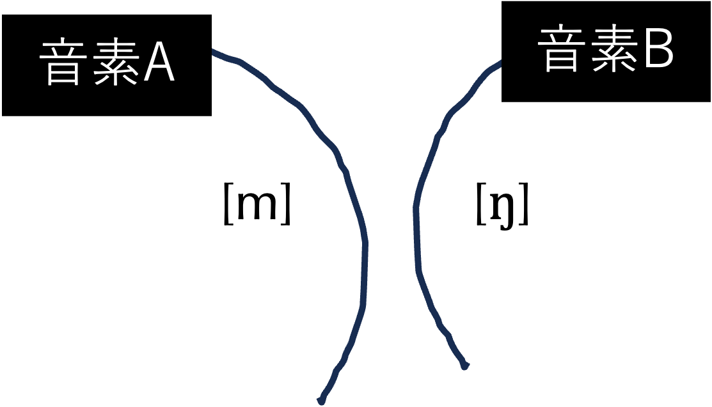
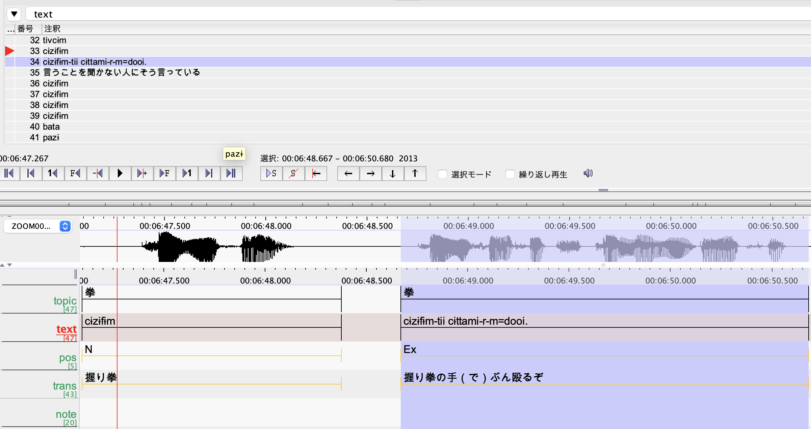

フィールド1日目。あなたは事前に約束しておいた話者の方と会うことになる。まず初めに行うのは、これから数ヶ月、没頭することになる基礎語彙調査である。何のためにこれを行うのか？基礎語彙調査は語彙を調査するためにあらず。これから始まる体系的記述のきっかけを掴むこと、それが基礎語彙調査の目的である。
理想を言うならば、基礎語彙調査を計画する前に然るべき機関で調音音声学のトレーニングを受けておく必要がある1もし、通っている大学（院）に調音音声学を学ぶ機会がなかったら、それでも諦めず、さまざまなチャンネルを試してほしい。例えば東京近郊に住んでいるなら、東京言語研究所の音声学講座（ただし有料）がある（2020年度以降はオンライン開講。ただし2023年度現在）。。本書では調音音声学を体系的にカバーするスペース的な余裕がない。現在、調音音声学を履修している、あるいはかつて履修したが自信がない人は、調音音声学の教科書を引っ張り出して、復習に努めてほしい。あるいは、本章および次章を読み進める際、教科書を傍に置いて、必要に応じて確認しながら理解を深めていくようにしたい。なお、本章には基礎語彙の聞き取りの「正解」とその解説動画が用意されているので、それも参考にしてほしい。
上で、「理想を言うならば」と述べた。実は、調音音声学の重要性を痛感し、「ちゃんとやっておけばよかった」と後悔するのは、フィールドワーカーなら多くの人間が経験することである。差し迫った必要性が、具体的に見えてきて初めて、基礎学問の重要性を痛感する。本書で、基礎語彙調査に触れてみて、調音音声学の重要性を（再）認識するきっかけになれば、それでもまだ遅くはないだろう。ただし、3章（中級編）、4章（上級編）を読み進める際は、調音音声学的な理解は前提となっていることに注意したい。
さて、基礎語彙調査では、事前に用意した語彙リストを元に、話者に「この単語はどう言いますか？」と言うふうに尋ねていく。本章では、この調査のねらいや語彙の選び方、データの管理法などを解説していく。まずは基礎語彙調査の基本中の基本である身体語彙の採集を体験しながら、この調査を体感することから始めよう。
以下のリストは、東京外国語大学アジア・アフリカ言語文化研究所の基礎語彙調査票（以下、AA研調査票）の身体部位に関する語彙のうち10項目を伊良部島方言に訳してもらった結果である。録音を聴きながら、国際音声記号（International Phonetic Alphabet; IPA）を使ってできるだけ正確に書き取ってみてほしい。聴き取れない部分があっても全く構わない。20単語の全てを正確に聞き取れる人はまずいないだろうし、今やるのはそれが目的ではない。基礎語彙調査が何のためになされるかを具体的に考えるために、とりあえずやってみてほしい。
伊良部島方言の音声的特徴が、すでにこの10単語に幾つも出てくる2ここで取り上げる他にもたくさん、気をつけるべき特徴的な音声がある。しかし、それらを概説するのが本書の目的ではない。伊良部島方言の音声と音韻の詳細に関心を持たれた読者の方はぜひ下地(2018)を参照されたい。。まず、そり舌の側面接近音の[ɭ]が１単語目に出てくる（(1)「頭」）。英語の/l/を発音するよりも舌の先を後ろに反らせて発音する。
2番目に、「う」のように聞こえるかもしれないいくつかの音声がある。円唇狭母音[u]よりも「お」に近く聞こえる下寄りの[ʊ]は、この言語の特徴的な母音の1つである（(7), (10)）。一方、(2), (5), (6), (8)で聞かれる音声は非円唇狭母音[ɨ]で、大まかにこの円唇（[ʊ]）vs. 非円唇狭母音（[ɨ]）は、聞き分けの際の重要なポイントとなる3もう1つ、「う」のように聞こえる音声で無視できないものがある。(5)の[f]の直後の音声に注目してみよう。これは、[f]の口の構えで狭めが弱くなったもので、IPAを用いて書くのが非常に難しい。伝統的に[u]で書かれることが多いが、唇を突き出すことはなく、[f]の特徴である上の歯と下の唇の接近が見られ、私は唇歯接近音 [ʋ]と書きとるようにしている。これは、母音音素/ɨ/が、環境に応じて微妙に姿を変えた音声（異音）である。。
3番目に、日本語母語話者で(3)の語末の鼻音[m]が正しく聴き取れた人は音声学の才能がある。撥音としてさまざまに発音される日本語の「ん」は、語末では大抵の場合、軟口蓋あるいは口蓋垂あたりで発音され、両唇を閉じる[m]になるのは「たまたま」そういうこともある程度である。伊良部島方言では、語末で安定して[m]として発音する場合があるかもしれない、ということである。
このようにして、全く未知の言語の単語をIPAで丁寧に書き取るというタスクを与えられた時、調査票を全て終えた時に「正解」がどれくらいになっているのだろうか？という不安に襲わるに違いない。しかし、この不安は、我々の基礎語彙調査の目的が孤立した1例1例の「聞き取り問題」を解いてくことであるという誤解に基づく。また、調査が進むほど手強い音声がどんどん出てくるという誤解もあるだろう。要は、基礎語彙調査を「IPAクイズ」的なものと考えていることからくる不安である。このマインドセットを捨てるところから、フィールド言語学はスタートする。
ある言語で区別すべき音声バリエーション（音素の種類）は実はかなり限定的である。のちに詳しく解説していくように、伊良部島方言の母音音素は6個、子音音素は18個あるが、このうちすでにほとんどが今みた20の基礎語彙の中に出てきている。続けてさらに50、100と基礎語彙を調査しても、遭遇する新規の音素はあまりなく、むしろ同じ音素の微妙に異なった姿を延々と観察し続けることになる。よって、基礎語彙調査を行っていれば聞き逃した対立に気づく機会が増え、対立しているだろうと思っていた2つの音声が1つにまとめられることに気づく機会も増えていく。例えば、[ɨ]と[u]の聞き分けができなかったとしても、それらが含まれるいろいろな語を採取して聞き取っていくうちに、ついにこれらが「違う音」だと気づくタイミングがくる。また、特徴的な[ɭ]について、それをそのままの状態で「特別だ」として捉えていては伊良部島方言の言語体系を正確に捉えることにならず、むしろこの音声と無関係に思え、また日本語話者にはありふれた音声と思われる[ɾ]と「同じ音」であると気づくことこそ、伊良部島方言の体系を正確に捉えることにつながる。いわば、一旦行なった区別を捨てるという過程がある。
このように、基礎語彙調査は語彙を調べるためではなく、当該の言語に使われる音素が組み込まれた膨大な数の語彙を浴びるように観察しながら、その整理を行うのが目的である4もちろん、集まった語彙は自分用の辞書として貴重になる。例えば、文法調査をするとき、例文を作ろうと思う際、「灰」はなんていうんだっけ、と自作辞書を検索する、ということは日常茶飯事になるだろう。さらに、当該言語の語彙体系を記録保存するという意味で、より本格的な辞書を作成する際の土台となるのは言うまでもない。大事な点は、基礎語彙調査の第一の目的が音素分析にあるという点で、その意味では、下手に凝った項目作りに時間を溶かすべきではないということである。談話を書き起こす過程や日常生活を送る中で、常に未出語をメモって記録していき、基礎語彙調査のデータと統合して辞書を構築していけば、自然と、その言語文化に適合した豊かな辞書データが得られるものである。。基礎語彙調査を行うことによって、一般に音素分析と呼ばれる言語記述を開始するきっかけを掴むことができるようになるのである。
以下では、基礎語彙調査を進めながら音素分析を行なっていく過程を、3つのキーワードで解説していく。それは、相補分布、自由変異、対立である。
IPA表は実在の言語音のリストではない。IPA表は、伊良部島方言などの具体的な言語の音声にラベルをつけるために設けられた基準点と考えてほしい。IPAの[u]は、人間が言語音として駆動可能な舌の位置として最も狭く、最も後舌の、そして最大限に円唇化した母音である。[ʊ]は、それよりも前寄りで、やや広めの、ただし極度に円唇化した母音である。この2つの基準点に照らして、例えば(10)「首」における母音はどちらに近いか、を考えるのである。私の耳には、(10)の母音はどちらかといえば[ʊ]に近く、この記号を使って当該音声を近似表記したということである。
ところで、(10)の母音も、(7)の母音も[ʊ]で書き取っているが、より正確にはこれら2つの音声も微妙に違っているはずで、例えばpraatでフォルマントを観察すると確かに微妙に違う。では、補助記号を使って、これら2つの[ʊ]の違いを近似表記すべきなのだろうか？
答えはYesともNoとも言えない。試行錯誤をしながら、異なる近似表記を与えたことに意味があったのか、それとも無駄だったのか、判別していくしかない。IPAを使った近似表記を行う目的が音素分析である限りにおいて、同じ音素に属する異音同士の区別は不要ということになる。音素分析の過程でラベルづけしていった細かい異音の数々は、それらが音素の袋に整理されると「同じ音」という扱いで、それら同士の細かい区別（例えば伊良部島方言における様々な[u]）は不要だった、と後でわかる。後で無駄だったと気づくのは問題ではないが、音声学のトレーニングが不足しているために、本来区別しておくべきだった音声群（異なる音素の袋に入れるべきだったものたち）を1つのラベルでIPA近似してしまったら、音素分析に失敗してしまう。この意味において、音声学のトレーニングが必要なのである。
基礎語彙調査で聞かれる大半の音声は、少数の音素が色々な環境に応じて姿を変えたものであると述べた。この「環境に応じた変異形」を（条件）異音という。音素は心理的実在であり、異音はそれが口腔を通して現実世界に発露した音声実体である。調査者は、音声実体としての異音しか観察できない。基礎語彙調査で最も時間を割く作業の1つは、何の異音かわからない、さまざまな音素由来の異音を観察し続けながら、基礎語彙データ中の異なる音素由来の雑多な音声群を、音素ごとに整理しわけていくことである。ここで重要になってくる概念が相補分布である。
今、日本語の簡単な例をもとに、相補分布概念を調査者側の視点と話者側の視点を分けて考えてみたい。話者は音素/s/を発話しようとするが、通常、音素は孤立して発話されるわけではない。音素列の中の１要素として連続して発話される。例えば「朝」「足」「明日」「汗」のように、V₁ + /s/ + V₂の環境を想定してみよう。その際、/s/は前後の音声環境に応じて微妙に異なる音声（すなわち条件異音）として発話されることになる。

ここで調査者の視点にスイッチしてみよう。今述べた微妙に異なる条件異音を、調査者であるあなたが聞き取り、環境ごとに整理し、「ある環境では音声A、別の環境では音声B」というふうに、相補分布状況を発見する。しかし、調査者は異音しか観察できないから、基礎語彙中に生じる色々な音声群のうちどれらが、同一音素の微妙に異なる条件異音かはわからないはずである。なぜ、[s], [ɕ]に目をつけて、これらの相補分布を調べたのだろう？それはズバリ、音声学的観点で十分に似ているからである5それを非明示的に、勝手に「先取りして」やってしまうことの方が、実は多い。例えば「朝」「足」「明日」「汗」の[a]は、その後に生じる/s/の微妙な異なりにより、これらもまた微妙に異なっていることになる。しかし上の説明では、議論を先取りして同一の音素/a/の異音であることを自明のものとして考えてきた。この非明示的な音素分析は、ほとんどの場合問題を生じさせることはなく、むしろ効率的な音素分析を行う上では必須とさえ言える。しかし、調査者の聞き取りの精度があまりに荒いと、この非明示的な音素分析がいずれ内部矛盾を引き起こし、再考が促されることになる。この先取りの問題は、最小対という概念をどう考えるか、という問題でもある（後述）。。つまり、音声的な類似性は、同一音素説を検証する際の出発点（必要条件）となる。
ここで、話者側の視点にもう一度スイッチしてみよう。話者が、ある音素（/s/）を発話しようとして環境（V₁ + /s/ + V₂）に応じて異音（[s], [ɕ]）を生じたという性質上、そこに環境同化メカニズムがなければならない。/s/の例では、V₂の影響による口蓋化の有無がそのメカニズムである。調査者は、今話者側の視点に立って、2つの異音[s], [ɕ]が、同じ音素を発話しようとした結果生じたものだという点を、口蓋化という環境同化メカニズムを使って証明するのである。
このように、音素分析においては話者の視点（ある音素を発話しようとして、音声学的に十分に類似する音声群で実現したこと）と調査者側の視点（相補分布すること）がいずれも必要なのである。相補分布しているというだけなら、いくらでもペアを見つけることができる。有名な例は英語の[h]と[ŋ]である。前者は音節末には決して生じず（例：hat, hand, ahead6より正確には、aheadの/h/は、発音としては[h]ではなく、母音間という特殊な状況によって有声化した[ɦ]になる。）、後者は（単純語では）常に音節末に生じる（例：sing, single）から、相補分布していると言える。しかし、話者側の視点に立って、「同じ音素/X/が、周囲の環境に応じて微妙に発音を変えた結果」として、これらが実現していると考えるのは無理がある。ある言語の音素分析とは、出自不明のいろいろな音声群を、環境同化メカニズムで説明できるなら同一音素にまとめていき、そうでないなら別音素として区分けしていく作業である。
巷でよく取り上げられる相補分布の比喩、すなわちスーパーマンとクラークケントの比喩には少々問題がある。これらは確かに相補分布し、同一人物説が疑われる。「話者側の視点」に立てば、同じ人物が変身しているのだから、この推理は正しい。しかし、「調査者側の視点」に立った時、つまり、スーパーマン vs. クラークケントを観察して、これらが相補分布することに気づいたとしても、環境に応じて微妙に姿を変えている、という程度の変身具合には思えないかもしれない。実際、私は幼少の頃、テレビ映画でこれを見た時、途中まで同一人物だと気が付かなかった。また、そもそも、スーパーマンと聞いて、世代的にそれがわかる人は学生にいないかもしれない。教室で相補分布の例を教えようと必死になっている教員の皆さんは、比喩を考えるよりも、言語の実例を使ってそのまま教えることをお勧めする。
先ほど見た10の基礎語彙の中に、伊良部島方言を特徴づける目立った音声として[ɭ]があった（(1)「頭」）。一方、(2)「髪の毛」において（日本語と同じく）はじき音の[ɾ]が聞かれるから、この言語はいわゆる「LもRもありそうだ」と思う人もいるだろう。上で見た2つ以外にも様々な単語で聞かれるこれらの音声について、IPAを使って書き取ってみよう。クリックすると音声が２回繰り返し流れる。
最後の音声は難解だったに違いないが、そのような音声であっても、現場で聴きながら話者の真似をし、また話者に「これであってますか？」と何度もチャレンジしている間に、できるようになってくる。「昼間」は、[p]の後に[ɭ]の長音がそのまま続く、という、日本語はおろか世界のどんな言語を見渡しても珍しい音節の作り方をしている。これが/p/をオンセットに従えた音節核としての[ɭ]の例である、というような分析が、のちにわかるようになってくる。
[ɭ]と[ɾ]は、IPAでは別々の記号を与えられ、言語によっては別の音として区別されるが、例えば[b]と[h]の2つのように大きく異なっているわけでもない。いずれも有声音で、前舌部分をアクティブに用いて出す音で（coronalで）、歯茎あたりにコンタクトし、かつ共鳴音である。一般的に流音と総称される音声群に属する。よって、音声的に類似しているとみなして、その相補分布を検証する価値が十分にある。
調査者は、基礎語彙データを分析することで、話者の中では同一の音素/X/（そのXにどのような記号を充てるかは後述）が、環境に応じて、音声学的に合理的なメカニズムで姿を変え、[ɭ]と[ɾ]として観察されるのだ、と言えるかどうかを知りたい。
基礎語彙調査を進めて100語、200語とデータを収集していくと、今問題になっている音声を含む語がたくさん集まってくる。試しに、AA研調査票200語まで調べた中で、[ɭ]と[ɾ]を含む語を以下に列挙してみよう。
16個のデータが得られた。大抵の場合、相補分布するかどうかを確かめるには十分な量である。今、[ɭ]と[ɾ]が生じる環境に注目してみよう。環境とは、ここでは音節における位置、すなわちOnset（頭音）、Nucleus（核）、Coda（末音）を指す。なお、伊良部島方言は音節構造がかなり複雑な方で、Nucleusの位置に子音が生じることがある。(14)はそのような例である。
さて、作業はここで終わりではない。環境同化メカニズムに沿って、ある1つの音素から[ɭ]と[ɾ]を導き出せるかどうか、検討しなければならない。調査者側の視点から話者側の視点にスイッチして、環境同化メカニズムを考えてみよう。
観察される異音の中に、「元々の音素の姿のまま、大きく姿を変えずに出てくる」異音がある。音素記号に選ばれるものは、まさにそのような異音である。これを今、デフォルトの異音と呼ぼう。デフォルトの異音と同じ調音特性を持つ音素が、環境に応じて姿を変えたという、ある種、異音同士に非対称性を認めるのが音素分析の鉄則である。では、[ɭ]と[ɾ]のうち、どれをデフォルトの異音と見做せるだろうか？
通常、環境が広い方がデフォルトの異音だ、という経験則がある。つまり、多様な出現環境に出てくるものは、元々の姿をそのまま発露させているだろう、という程度の経験則である。これに従えば、Onsetにしか生じない[ɾ]に比べて、NucleusにもCodaにも生じる[ɭ]がデフォルトの異音（つまり音素）候補ということになる。しかし、この経験則は単なる経験則で、あくまで環境同化メカニズムがうまく設定できるかがポイントである。
[ɭ]をデフォルトの異音とし、反り舌側面接近音音素/ɭ/を設定したとすると、これがOnsetに生じる際に[ɾ]に姿を変えたという環境同化メカニズムが必要になるが、それはなかなか考えにくい。さまざまな言語で、側面接近音はOnsetでも安定して生じうることを考えても、何か音声学的な理由で[ɾ]に姿を変える必然性がないからである。
一方、[ɾ]をデフォルトの異音とし、はじき音音素/ɾ/を設定すると、これが[ɭ]に姿を変える非常に合理的な環境同化メカニズムを設定できる。今、音節の位置とモーラの関係を考慮に入れてみる。すると、Onset以外はその位置でモーラを持つという共通点が見えてくる。つまり、音声的に長めに発音されることが強制される。はじき音は音声的にも非継続音（持続して調音できない音声）で、かつ閉鎖音に比べてもごく一瞬のコンタクト（舌先と歯茎）が見られるだけである。伊良部島方言では、有声非継続音（例えば/d/や/dz/）がモーラを持つことは回避されるという一般原則がある。よって、非継続音素の/ɾ/がNucleusやCodaに生じることで、その1モーラ分の長さを実現するために継続音[ɭ]に姿を変えたのだ、という説明が可能になる。

基礎語彙調査を進めていると、例えば「まゆ」[mʲiːnumaju]における[u]のように、/j/の後で[u]となる例に多数遭遇する。一方、「唾」[judaɭ]のように、/j/の後に生じているにもかかわらず、より広めの[ʊ]になることもある、とわかる。単語の初頭音節では[ʊ]に、それ以外（あるいは末尾）で[u]というふうに、音節の位置で絞れば相補分布するかもしれない、と考え、データを見返すと、「6」を表す[mʊjʊ]のような例も見つかり、相補分布的状況ではなさそうだ、ということが薄々わかってくる。
調査を進めていると、上記のような例に多数遭遇し、同じ環境で[ʊ]がより狭い[u]として出てくることもあり、その逆もある、ということを知る。その度に[ʊ]と書いたり、[u]と書いたりしているうちに、話者にとって弁別的ではないだろうとわかってくる。これを確かめるために、以下のようなチェック法で話者に確認してみる7このチェック法は文法調査でも活躍する。例えば、伊良部島方言では主語の格助詞（主格助詞）に/ga/と/nu/の2種類あるが、それが名詞の種類によって変わるかどうかを調べようとして、「これから「頭が痛い」という文を2回発音します。どっちが正しいか教えてください。」のようにする。この場合、「頭が」の部分を/kanamarnu/と/kanamarga/とで交替させてチェックするのである。このように、調査者自身が調査対象言語で作った単語ないし文について、あるいは媒介言語で作った単語や文について話者の判断や発話を引き出す（elicitする）この調査法はelicitationと呼ばれる。elicitationをする際、大抵「ここを変えたらどうなるだろう」という仮説がある。その変数以外は固定されていなければ意味がない。すなわち、ミニマルペアを用いる必要がある。[ʊ]と[u]の交替が話者の異なった反応を引き出すか、が関心の的である。このような場合、それ以外の箇所、すなわちn_d_の発音（個々の音声に加え、プロソディーも）が揃っていなければならない。つまり、調査者の発音が厳密にコントロールされていなければならない。よってこの方法を使うには、その言語へのある程度の習熟を必要とする点に注意しよう。。
話者は「どっちもOKだ」あるいは、「今のは同じだったよね？（ちゃんと2つ違ったものを発音したの？これは引っ掛け問題？）」と返すのである。同じ環境で、音声を入れ替えても話者の側に自覚がない、あるいは「同じだ」という自覚があるなら、[ʊ]と[u]は伊良部島方言で同じだとみなされる1つの音（音素）の微妙に異なる変異（異音）だと考えることができる。
自由変異の問題は、よく考えてみると、際限のない微細な違いにこだわる危険性と隣り合わせである。同一の環境で、同じ音素が微妙に姿を変える時、その微妙さは、時には音声学のトレーニングを十分に受けた調査者にすら気づかれないレベルであるかもしれない。例えば、日本語で母音で始まる単語があるとき、その母音は時には声門閉鎖音を伴い、時には声門摩擦の有声音で始まることもある。この違いは、自由変異の問題として記述に取り込んだほうがいいのだろうか？
耳をすませ、あらゆる音を未整理のまま聞こうとする音素分析の初期の段階では、このような微細な違いに敏感にならざるを得ないが、遅かれ早かれ、調査者側が熱心に聞き分け、書き分けていても意味がない区別だ、ということに気づき、それらを区別せずに1つの記号で簡略化して書き取っていくことになる。そこで調査者は、これ以降、[u]と[ʊ]をいずれも[u]として、やや荒っぽく記述していくことになる、ということが生じる。これを簡略音声表記という。
基礎語彙調査を進めていく過程で「この音とこの音は自由変異だからいちいち細かく気にしないでおこう」とか、「この音とこの音は区別されていなければまずい」という仕組みがだんだんわかっていくにつれて、音素的対立をより反映した簡略音声表記が増えていく。精密音声表記と簡略音声表記の混在がよく生じることになる。それは基礎語彙調査の目的が達成されつつあることを意味しているのであって、むしろ歓迎すべき「不統一」である。簡略音声表記が増えてきたある段階で、一度音素表を作って、音素分析の途中経過を整理するのをお勧めする。
(3)「耳」における語末の[m]は正しく聴き取れただろうか？「頭」の例における語末の[ɭ]も合わせて考えれば、伊良部島方言では日本語と違い、語末に来る子音が「ん」（IPAでは[ɴ]）一択ではないらしいことがわかってくる。これを正しく聞き取れていなくても、基礎語彙調査を進めていって例えば以下の単語に遭遇したときに気づくことになる。
[m] vs. [ŋ] の区別
このように、基礎語彙調査をしていると、決して聞き取りミスをしてはいけない音声、あるいは混同してはいけないペアに出会う。「神」と「カニ」の例から明確にわかるように、語末の[m]と[ŋ]は話者にとって異なる音だと認識されており、その言語体系において対立している。単語の一箇所の音声だけが対立しているペアをミニマルペアと呼ぶ。ミニマルペアは、（こちらが似ていると思い込んでいた）音声同士が別の音素に属するというヒントを与えてくれる。

あなたの母語（例えば日本語の東京方言）に照らして、この音声とこの音声は対立しないだろう、とたかを括っていても、方言調査をしていれば、それが裏切られることが多い。上で取り上げた「髪の毛」の最終音節に見られる[dz]に注目してみよう。これを（摩擦音[z]ではなく）破擦音として書きとれた人は音声学的な才能に恵まれていると言える。日本語では、例えば「残念」「人口」「頭痛」などのような単語の先頭で子音が[dz]になりがちだが、必ずそうなるわけではないし、母音間では[z]になることもしばしばである。日本語母語話者は、大まかに言って単語の先頭では[dz]、母音間では[z]というふうに自動的・無意識に発音しわけていて、それらが違った音だと知覚することがないのである。しかし、伊良部島方言の話者にとって[dz]と、閉鎖の区間のない[z]あるいは[z̞]、すなわち/z̞/は対立している。この音素は、破擦音/dz/と違って、閉鎖の区間のないことが弁別的な特徴になっている。
米
弁別的であるから、わずかでも[d]の閉鎖を加えて破擦音にして「これでいいですか？」と言うと、「いや、違う」と言われる。話者がこの違いにかなり敏感であることを示す以下の映像を見てみよう。話者自身が、[pʰaz]「ハエ」と[pʰadzɨ]「足」の音声に注意を向け、これら（すなわち摩擦と破擦）が異なる音なのだ（対立しているのだ）と示すシーンである。なお、よく聴いているとわかるが、韻律特徴も異なっている。ハエはHL（Hは高いピッチ、Lは低いピッチを簡略的に示す）のように下降が見られ、足はそのような下降がない。
[pʰaz]「ハエ」と [pʰadzɨ]「足」の対立
今問題にした子音[dz]に後続する母音、すなわち平唇の中舌狭母音[ɨ]もまた、伊良部島方言および宮古語に広く見られる音声であり、基礎語彙にも非常にたくさん出てくる。この音声は、歯茎摩擦音ないし破擦音（[s], [ts], [dz]）に後続する環境でのみ見られる8今述べたのは音声[ɨ]の分布についてである。音素/ɨ/は2つの異音[ʋ]と[ɨ]をもち、前者は/f/の後にのみ生じ、後者は今本文で述べたように歯茎摩擦音ないし破擦音（[s], [ts], [dz]）のあとにのみ生じる。つまり、2つの異音は相補分布している。。
[ɨ] の音声
これらの単語の発音を日本語の仮名で書き取れ、と言われたら、あなたはおそらくパズ、ポスと書くだろう。しかし、日本語のズ/スと伊良部島方言の[dzɨ]および[sɨ]はある点で少し異なっている。日本語のズ/スの発音を知るために、試しに鏡を見ながらズの調音時の唇の様子を確認してみると、非常に僅かではあるが、唇が「丸まろう」というそぶりを見せる人もいるだろう。この日本語のズ・スの母音は、IPAでは円唇の中舌狭母音[ɵ]を基準に、「円唇弱め」を示す補助記号を使って[ɵ̜]と書ける。しかし伊良部島方言の問題の音声は完全に平唇の[ɨ]で発音され、一拍ずつゆっくり丁寧に発話してもらうと、よりはっきりと平唇で発音してくれる。
(11) [sɨ̩ta]をはじめ、20の基礎語彙の色々な単語に見られる[ɨ]は平唇であって、どんな環境でも、わずかでも円唇性を加えると話者に「だめ」と言われてしまう。なぜなら、円唇性を加えると、全く別の母音/u/（[u]および[ʊ]）との弁別が危うくなってしまうからである。
あなたがもし、平唇と円唇の区別に注意がいかず、例えば(2)「髪の毛」を[kaɾadzu]あるいは[kaɾadzʊ]のように書き取っていたとしても、いつか、以下の基礎語彙に遭遇して、この円唇性の違いにハッと気付かされることになるだろう。
このように、補助記号を使う場合は、その言語における事情（弁別的な特徴ともいう）をも考慮して、何を基準に補助記号を加えるかを決めるべきであろう。
またしてもミニマルペアの登場である。話者は、はっきりとした違いを出すために、やや大袈裟に、「地面」と「さあ」の違いをあなたに示すだろう。この「[dzɨː]と[dzʊː]の違いだよ」という明示的なデモンストレーション（）を通して、話者が唇をオーバーに横にひいて[dzɨ]を発音して見せ、逆に唇をオーバーに丸めて[dzuː]を発音してみせてくれるのを確認し、あなたは初めて「唇を丸めるやつと丸めないやつ、という違いがあるのか！」と気づく。伊良部島方言の母音のシステムを支える特徴群がおぼろげながらわかってくるのである。
ここまで、対立を見つける過程と、相補分布を見つける過程を、まるで独立した作業のように扱ってきた。しかし、よくよく考えてみると、それはとても変な話であることに気づく。相補分布の核心には、音声が前後の環境に同化して微妙に姿を変えるという環境同化メカニズムがあった。どの音声であれ、隣接する音声同士でこのメカニズムを免れる音声など存在しないと考えるなら、2つ以上の音声で構成される単語ペア（以下の例参照）を比べたとき、ある部分「だけ」が異なるという、以下に示すような対立の例を見つけることは不可能なはずである10「胃（い）」と「絵（え）」のような場合は、[i]と[e]で純粋に対立すると言える。しかし、ある単語が1つの音声で構成されている、とか2つ以上の音声で構成されている、と「数える」時点で、それはその「音声」を、カテゴリカルに音素として捉えていることになり、これから音素を同定しようとするという場面設定に矛盾する。先取りした結論が、ここにも隠れていたのである。。
[m] vs. [ŋ] の区別（再掲）
「対立」の例としてサラッと流してきたこれらの例を環境同化のメカニズムの観点で見直してみよう。これらは、語末子音が異なることによって、その前の母音部分も微妙に異なっているはずである。[m]の前の[a]を今、[a₁]と表記し、[ŋ]の前の[a]を[a₂]と表記してみる。同様の理屈で、[kʰ]も、2つの異なる音声として表記する。
より正確な音声表記
このように、事実を正確に描写すると、語末子音においてのみ対立するミニマルペアに見えたものは、厳密にはそうではないということになる。私たちが、環境同化による母音の細かい音色の違いを無視して、「対立」の構図を見出したのは、a₁とa₂が、そしてkʰ₁とkʰ₂がそれぞれ環境同化で説明できる同一音素の異音であるという整理を先取りして（そして非明示的に）行ったからに他ならない。
このように、音素設定における対立およびその絶大な効果（という誤謬）を強調し過ぎるのは、現実に即したこととは言えず、また論理的にも矛盾がある。環境同化メカニズムをなるべく明示的に明らかにしながら、それと相補分布の合わせ技で音声を整理していくことこそ、音素設定および音素論の中核である。
基礎語調査には主に2つの目的がある。1つは、シンプルに「言語調査に慣れる」ためである。それはあなただけでなく、話者にとっても素晴らしいウォーミングアップになる。あらゆるフィールド言語学的調査の中で、基礎語彙調査ほど話者にとってもあなたにとってもわかりやすいタスクはない。単語を訳してもらい、あなたはその聞き取りに励むのである12あなたにとっては言語調査がどんなものかはひょっとしたら自明かもしれないが、話者にとって、「方言を教える」「方言調査に協力する」ことは全くピンとこないと思った方が良い。例えばあなたが初対面の話者に、再帰代名詞の照応先をテストするための複雑な文をいくつも「教えてもらおう」としたとしよう。話者の方は、そんな文章を発話させて、この人は方言を「教えてもらう」つもりがあるんだろうか？と思うだろう。しかし、「頭のことは方言でなんと言いますか？」という基礎語彙の収集からスタートすれば、あなたがやりたいことが徐々にわかってもらえるようになる。。しかも、話者の側にかなりのクリエイティビティを発揮する余地があって（すなわち、「こんな単語もあるよ。知ってるかい？」みたいなやりとりに発展しやすく）、端的に言って話者もあなたも「楽しい」。この「楽しい」という経験は、ものすごく重要である。今後、あなたと話者は数年にわたって、複雑な言語体系を解き明かす旅に出るのだから13基礎語彙調査では、話者の側からあなたの側への「知識の伝達」が比較的見えやすい形で行われる。このことは、話者の方から自信を奪ったり、不当に尊厳を傷つけるリスクが低くなることを意味する。どういうことか説明しよう。方言話者の中には、方言は訛ったもので、教える価値などない、恥ずかしい、そう思っている人もたくさんいる。正しい言い方などないから教えられない、と言われるかもしれない。特に、あなたの側に明確な仮説があって、それらをテストするために例文をいくつも訳させるような文法調査をやっていると、「私はこういうけど、これはただ訛っているだけかもしれないし、正しいかどうか不安だ」というふうになりがちで、話者によっては「正しく教えられずにごめんね」と思ってしまう方もいる。それはあなたの調査の仕方、すなわち、基礎語彙調査というフェイズをすっ飛ばしていきなり妙な文法調査に走ってしまったことによる。たとえピンポイントの文法調査をしたくて方言話者を訪れたとしても、まず基礎語彙調査を少なくとも1日やり、「このように必死に学ぶ人間になら、（自分が正しいと思う）この土地の言い方を自信を持って教えられる」と思ってもらうようにしたい。信頼関係を作る場として、基礎語彙調査はとても重要なのである。。
基礎語彙調査のもう１つの、そして最も重要な目的は、基礎語彙という具体例を通して当該言語の音声の特徴にできるだけたくさん触れて、その「限界」を見定めること、言い換えれば、見かけ上は無限に多様な音声特徴のうち、当該言語にとって意味のある特徴と意味のない特徴の区分けを行い、前者に特化したスリム化を行っていくことなのである。これを小難しい言い方で音素分析という。音素、すなわち当該言語で違いがあると認識されている少数精鋭の音のセットを、基礎語彙調査を通して、さまざまな音に出会いながら見つけ出していく。その詳細は次章で解説するが、すでにここまでの例で、あなたはミニマルペアとの遭遇によって、話者が「違う音」とみなす音声群を発見している。一方では条件異音や自由変異との遭遇によって、話者が「同じ音」とみなす音声群を発見した。その遭遇と発見の繰り返しによって、膨大に見える音声特徴が、数十の（20-30程度の）音素のリストにスリム化していく。あなたは、この作業の只中にいるのである。音素分析のより実戦的な解説は次章で行う。
いずれにせよ、この一連の作業において、事前に調音音声学のトレーニングを受けておくことがいかに重要か、今、身をもって知ったと思う。大学の授業で調音音声学のトレーニングがあるのは、IPAを覚えて言語学を嫌いにさせる目的があるのではなく、フィールドワークで基礎語彙調査をすることを考えてのことなのである。
音素のリストを手に入れることは、記述の一部を占める重要な過程であるが、もっとプラクティカルな意味で役に立つ。音素のリストを手に入れたということは、1文字1音素の表記（音韻表記）を手に入れたということであり、当該言語を一貫したルールで「書く」ことができるようになることを意味する（この点については例えばCrawley 2007: 95-97; Mosel 2011: 81なども参照）。しかも、当該言語の言語音の区別にとって不要な「ノイズ」を取り除いた、無駄のない表記を手に入れることを意味する。
「書く」の活用（抜粋）：精密音声表記
上記の活用を見ると、語尾[a]と[i]の交替が見て取れるだろう。そこで、「書く」という語彙的意味を持ち、上記のペアで共通の部分（語幹）を探そうとすると、これらの母音を除いた部分、ということになるが、精密音声表記で共通部分を厳密に探していくと、[kʰa̩]までということになる。語尾の直前の[k]と[kʲ]は、音声としては異なっているからである。しかし、これらは同一音素/k/の、音声的に微妙に異なった実現（異音）であり、これらは相補分布していることがわかる（母音/i/の直前で[kʲ]、そうではない時に[k]）。すなわち、母音[i]の前という環境では軟口蓋音/k/が口蓋化してやや硬口蓋に舌がせり上がった[kʲ]になるという、音声的理由を想定することが十分に可能である。これを反映し、以下のように音素表記で分析し直してみよう。
「書く」の活用（抜粋）：音素表記
非常にすっきりと、共通部分/kak/を取り出すことができる。
このように、文法調査に際して効率的かつ最適な情報量の表記で例文を記録する手段を手に入れておく必要があり、そのためにも基礎語彙調査は重要なのである。
なお、方言研究では、どのような方言であれ、その音素体系の措定をすっ飛ばして、（標準語の表記である）カナ表記で済ませようとすることがよく行われる。これでは、当該方言の体系を正しく記録する術を、それが始まる前に放棄してしまうことになる。決して、真似しないようにしたい。
ところで、音素を実際に表記する際、アルファベットで書く文法書もあれば、IPAを用いた文法書もあるのに気づく。原則的に、音素は、その異音のうち、基底と呼べるものを用いてそのIPA記号を使って表す。そうすることで、（発音されない抽象的な単位とはいえ）心理的な体系の中でどのような調音特徴を持つものとしてストックされているかがわかる。伊良部島方言の母音音素に/ʊ/がある（1.4節参照）。これは、[u]と自由変異関係にあり、また[o]になることもある。音素表記をする上で大事な点は、この音素が、他の音素との対立において円唇の後舌で、かつ広母音ではないということが伝わることである。IPAを使って正確に書けば/ʊ/だが、円唇・後舌・非広母音であることさえわかれば、よりシンプルに/u/でも構わないのである。そもそも、任意の言語の任意の音声を正確に記すことを目指すIPAの記号に対し、音素記号は、ある特定の言語の、対立を基本としたシンプルな記号体系という性格を持っている。
そこで、私は簡略な記号/u/を用いて表すことにしている。これには実用的なメリットもある。（他の音素との対立を考えた時に不要な）特殊記号や補助記号を入力するにはキーボードの設定などで面倒なためである。これを音素の実用表記（practical orthography）という。共通語の例を挙げると、その子音音素/ɾ/は、確かにここで示すように弾き音で書いた方が正確だが、共通語には震え音の/r/と弾き音の/ɾ/が対立しないので、あえて弾き音の記号を使い続ける必要はない。そこで、キーボードで一発入力できる実用表記として/r/を使う、ということが慣習的によく行われる。
基本的に、ある言語の表記を策定するには、音素表記をベースに、その実用表記で表すと良い。すでに見た/ɾ/は/r/として実用表記する。伊良部島方言の表記は、以下のようになっている（音素分析と音素体系の詳細は下地(2018)を参照）。
これらのうち、破擦音/c/と/z/は、音素記号だと記号が2つ連なることで判読しにくくなるのを避けるためにこうしている。例えば「お店」を意味する/maccja/ [matːɕa]は、音素表記だと/matstsja/となり、単純に読みにくい。接近音の/ž/（例：/maž/ [maz̞]「米」）は、音素表記では補助記号付きの/z̞/（[z]の狭めが弱め）であるが、これを単に/z/とすることはできないので（すでに/dz/の実用表記で使用済）、ハチェックをつけている。大文字の/Z/としても良いだろうし、入力が面倒なときは実際そのようにする場合もある（/maZ/）。このように、1つの音素に対して複数の実用表記を用意することもよくある。
日琉諸語の場合、さらに仮名表記を考案することもあるだろう。仮名は音節（モーラ）文字なので、上記の実用表記とは別種の問題が生じる。例えば伊良部島方言の母音/ɨ/は日本語には存在しないので、/sɨ/を「さ行」の仮名でどう表すかという問題が生じる。伊良部には別途、円唇の/su/があるから、私は/sɨ/を「す」、/su/を「すぅ」としている。また、伊良部島方言は日本語のCV(C)構造とは違った色々な音節構造が生じるため、仮名で書くのはさらに困難になる。「シラミ」の/ssam/は「っさむ^」として対応している。この仮名表記の問題に関心のある方は、ぜひ小川編(2015)を参照されたい。琉球諸語全体に対する統一的な仮名表記法の提案書であり、私も今ここで抜粋した伊良部島方言の仮名表記法案を提案している。
さて、あなたは初日の調査を終え、聞き取った音声を（正解など知らぬまま）ノートに記録し、不安を抱えて帰宅する。宿ではノートを見直しながら、音声的に十分に類似し、相補分布しているような例はないかを探し、あるいは対立（特にミニマルペア）を探すなどしながら、音素体系へのスリム化の作業を開始することになる。せいぜい数十単語ではまだ大したスリム化はできないが、これが100単語、200単語になってくると、さまざまな相補分布、対立を発見できるようになってくる。実際、2.2節で見たように、/r/の相補分布の発見には基礎語彙200語程度の分量で十分だった。
本章でいくつかの特徴的な音声に遭遇したように、特に基礎語彙調査の最初期では見知らぬ特徴的音声に遭遇すること日常茶飯事である。しかし、あなたが入るフィールドの、あるいは周辺言語の先行記述を前もって把握しておけば、「この音はあれに近い音だな！」と備えることができる。
先行記述も全く触れていない本当に新規の音声の書き取りに直面することもある。そのような場合、焦らず、当該の音声を調音音声学的に記述してみる必要がある。ただし、「その音がIPA表のどれに相当するか」というせせこましいことは考えず、まず「その音を自分で再現できるようになる」のを待つべきである。聞いた音声を、聞いたまま真似して再現し、話者に「うん、それでいい」と言われるまでやってみる。そのあと、口が覚えたその音を繰り返しながら内省し、「調音位置はどこかな？」「閉鎖が緩いかもしれないな」などと分析して、適切なIPAで転写していく14自分の発音を内省する際に私自身がよくやる方法は、目を閉じて下を向き、囁き声で繰り返すというものである。目を閉じると、口腔の動きに集中しやすくなる（ような気がする）。アクセントなどのプロソディー特徴を内省する場合は、モーラ・音節を同じくする無意味なハミングに置き換えると、語彙の意味的な側面や調音的に一様ではないことによって注意を逸らされることなく内省できる。。
語彙調査において、聞いた音声を黙って書き取り、再現せずに「次、お願いします」という調査者もいるが、それではダメである。それはまるで、ギターを習っているときに、先生やギターヒーローがあるコードやリックを弾く様を見て、それとコードタブの対応を確認し、「よし、弾けたとして、次いこう！」となるようなものである。まず、自分で弾けるように手を動かすべきである。
大学(院）で学ぶ調音音声学は、IPAという記号と（先生の）発音を対応させる退屈な営みではない。まず自身の調音の様子を内省できるようになることが目的であって、これができているからこそ、他人の発音の真似を通して間接的に「この音声だ」という理解に繋げていくことが可能となるのである。この営みにおいて、IPAを暗記したりすることはせいぜい二次的で、個人的には全く無意味である。例えば上でみた非円唇中舌狭母音[ɨ]について、仮にその記号を覚えていなかったとしても、それが平唇で発音されることが重要だと気づき、音色的に中舌狭母音であることが内省できていればそれで良い。IPAの表を持参していれば、「ああこの記号ね」で済ませられる15International Phonetic Associationの公式ウェブサイトに、IPAの子音図、母音図を音声つきで確認できる極めて有用なページがある。https://www.internationalphoneticassociation.org/IPAcharts/inter_chart_2018/IPA_2018.html（2023年11月15日最終閲覧）フィールド中、音声の真似で手こずったら、このページを参考にしてみても良いだろう。。しかしもし、聞いた音声を真似できず、「はいはい、日本語のウみたいなやつね。」と恐ろしく解像度の低い理解しかできなかったら、仮にIPAの表を丸暗記できていたとしても、何の意味もなくなってしまう。
基礎語彙とは、その言語で古くから使われ続けてきたと予想され、従って借用語が含まれにくいと予想される語彙のことである。身体部位や親族名称、身近な動植物語彙などがそれに当たる。基礎語彙をある程度の量、浴びるように聞きながら、その言語（の土着の語彙）にはどのような音声が聞かれるのかを確かめるように記録していく。
通常、基礎語彙調査票（東京外国語大学ＡＡ研の基礎語彙調査票など）を使って、基礎語彙を媒介言語（日本の方言研究の文脈では標準語あるいはその亜種）から対象言語に訳してもらい、国際音声記号（IPA）で書き取るという作業をする16AA研の基礎語彙調査票はここでダウンロードできる。なお、日琉諸語の語彙データ収集に特化した調査票として、国立国語研究所の「日本の消滅危機言語・方言の記録とドキュメンテーションの作成」プロジェクトからリリースされている基礎語彙調査票（1174項目）も非常に便利である。国立国語研究所学術情報リポジトリ（https://repository.ninjal.ac.jp/records/2000609）でダウンロードできる。。基礎語彙調査票はアルファベット順になっているものもあるが、意味領域ごとに分類しなおして（つまりシソーラス形式にして）使うべきである。例えば、「朝」の次に「足」、その次に「明日」、さらに続いて「汗」というふうに調査が進むより、「朝」、「早朝」、「昼」、「夕方」というふうに調査が進むほうが話者の記憶を呼び起こしやすく、調査票にない重要語彙を連想してもらいやすい。上記以外にも、注意すべき点は多いが、それはChelliah and De Reuse (2011), Ladefoged (2003), Maddieson (2001), Abbi (2001)に詳しい。
なお、基礎語彙調査票のように、前もって項目が与えられている調査票を使って調査をすることを、Schedule-controlled elicitationという(Chelliah and De Reuse 2011)。この種の調査は調査者にとってとっつきやすいが、調査初期には極めて大きなデメリットがある。例えば話者の側に一切の自由がない点（したがって話者が退屈したり精神的な負担になったりする点）や、その言語にとって重要な語彙とそうでない語彙を帰納的に理解していく際の障害となる点である。
このデメリットを克服する方法として、筆者自身が実際に試した1つの方法は、数人の話者の方に前もって調査内容を連絡したうえで集まってもらい、それぞれが思いつく語彙と例文を片っ端から教えてもらうというものである。これはとても効果的であった。というのも、一人の話者が思いついた語彙から別の話者がまったく別の語彙を連想することがあるし、あるいは一人の話者がなかなか語彙を思いつかない意味領域について別の話者がサポートしてくれるということがよく起こるからである。私が用意した意味領域は以下のものである（Healey 1964, Dixon and Blake (eds.) 1979, Chelliah and De Reuse 2011を参考に作成した）。
その日の調査で書き取った語彙や例文は、宿に戻ってその日のうちに別途用意した意味領域別のノート（上記(1)から(17)の17冊）に転記する。ノートにはページ番号を付しておき、検索を容易にしておく。ノートではなく、話者の目の前でラップトップに直接入力する方式（記者会見の記者方式）はやめておくべきである。聞き取りの際、顔は常に話者の側（特に口）に向いている必要があるし、キー入力の音が録音に入るのは避けなければならない。
動作や状態、思考に関する語彙など、要は名詞になりにくい語彙の収集は、話者が言語調査に慣れるまでは無理に行う必要はない。とはいえ、数ヶ月は続くであろう基礎語彙収集の時期に名詞ばかり収集していてはあなたも飽きてしまうし、また、あなた自身の語学のスキルを磨くためにも、ある程度の動作関連語彙や状態関連語彙を調査初期の段階でとっておくのは有益である。そのために、（名詞をターゲットとして基礎語彙収集する際に）例文も一緒にとるのである。
例文つきで基礎語彙を収集するという営みは、話者にとってはすぐには慣れない作業である。例えば、以下のやり取りのようになってしまう可能性がある。
ここで話者が言う「特別な言い方はない」は一体どういう意味だろう？あなたは、「頭」を使った例文として、「頭が痛い」というデータを欲しかったのだが、話者は「頭」という語彙の他に、「頭が痛い」という意味を持った語彙があるかどうか聞かれたと思ったのである。こう思われるのも無理はないことである。というのも、似たようなことを、あなたは以下のような形でやっているはずだからである。
このように、伊良部島方言には「見た目が綺麗だ」という、それ専用の語彙があるというのである。「頭が痛い」の場合にも、それ専用の語彙があるのかを聞かれた、と話者は思ったのである。
よって、「頭」という語彙を使った例文が欲しいのだ、ということが明確に伝わるように、インストラクションを行う必要がある。私はよく以下のようにしている。
こういうやりとりを通して、「語彙と、それを使った例文も習おうとしているんだな」というのを話者に理解してもらう。なお、「頭が痛い」より「今日は頭が痛いなあ」や「頭が痛いからもう寝るよ」みたいに、日常会話で実際に使う場面が想像しやすい例文にするのがコツである。
なお、ノートにまとめた記述データと生の録音データは、何らかの形で電子的に管理することになるだろうが、現時点（2023年12月時点）で最良の方法の1つは、アノテーションソフトELAN17https://archive.mpi.nl/tla/elan でダウンロードできる。2023年12月現在、フリーで手に入る。を使って管理することである。ELANは、録音ないし録画された映像・音声データに注釈をつけ、映像・音声データの任意の注釈情報と時間情報を紐づけることができるソフトである。例えば、図5はある日の基礎語彙調査の録音データをELANで読み込み、そのデータを聴きながら注釈をつけて行ったものである。この日は身体部位に関する語彙を調査しており、図はその中でも「拳」に関する語彙の録音部分のキャプチャである。
ELANの詳細な解説は後日アップするELAN解説にゆずるが、この時点で注目すべき点だけここで述べておく18加藤幹治氏による要を得た解説記事が Qiita にあり、そこにあるいくつかのリンクも含めて参考になる。。まず、語彙調査の収集項目（ここでは身体部位の和訳）を書き込むtopic層、聞いた語彙の語形を書き込むtext層（聞いた語彙の語形を書きとる層）、pos層（その品詞を書き込む層、ただし以下で詳述）、（全文）訳のtrans層が基本セットとなる。これらに加え、メモはnote層に自由に書き込む。なお、pos層は習った語や形態素の品詞を書くのはもちろんのこと、例文を合わせて習った場合は、例文の「品詞」としてExなどと書いておくと、検索その他の点で便利である（例えばELANのファイルから辞書を作るようなプログラムを書く際、Exをターゲットに色々な加工ができたりするので）。1つの調査項目で語形と例文を同時に習うことはよくあるが、そういう場合、topic層の同一項目下にあるものとしてタグ付けしておけば良い（図では「拳」の項目に、語形と例文が並んでいる）。
